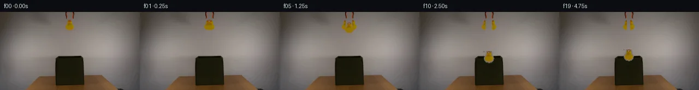

![首帧]()

Round 00
2026-11-05T15:25:01.846187+00:00像素候选变化代码 +275/−0inspection 更新
pixels f70e270301c5b177 · code f4dcd75b0c7f367b
查看本轮 generate.py 真实 diff
--- previous/generate.py
+++ current/generate.py
@@ -0,0 +1,275 @@
+#!/usr/bin/env python3
+"""generate.py – Case 0059: Grabber releases yellow rubber duck into dark green fabric box.
+
+Method: Layer compositing with pixel manipulation.
+- Clean background plate via horizontal inpainting of duck + claw region
+- Duck sprite extracted with soft mask from original
+- Grabber claw sprites split into left/right halves, shifted outward for release
+- Duck falls with frame-based gravity into the box opening
+- Soft squash/stretch at impact
+- Final frames show duck settled in box, claws relaxed
+"""
+
+from PIL import Image
+import numpy as np
+from pathlib import Path
+
+H, W = 144, 256
+NUM_FRAMES = 20
+
+# ── Load original ──────────────────────────────────────────────
+src = np.array(Image.open("first_frame.png")).astype(np.float32)
+assert src.shape == (H, W, 3), src.shape
+
+# ── Duck region definition ─────────────────────────────────────
+DUCK_Y0, DUCK_Y1 = 14, 36 # rows containing duck
+DUCK_X0, DUCK_X1 = 115, 143 # cols containing duck (+ margin)
+DUCK_CY = (DUCK_Y0 + DUCK_Y1) / 2 # ~25
+
+# ── Grabber claw region (orange tips gripping duck) ────────────
+CLAW_Y0, CLAW_Y1 = 12, 42
+CLAW_X0, CLAW_X1 = 117, 140
+CLAW_SPLIT = 127 # X coordinate splitting left/right claws
+
+# ── Box opening ────────────────────────────────────────────────
+BOX_Y0, BOX_Y1 = 82, 117 # dark interior rows
+BOX_X0, BOX_X1 = 102, 152
+
+# ── Helper: horizontal inpainting ──────────────────────────────
+def inpaint_horizontal(img, y0, y1, x0, x1, left_margin=8, right_margin=8):
+ """Fill region [y0:y1, x0:x1] by interpolating between left and right neighbors."""
+ result = img.copy()
+ for y in range(y0, y1):
+ # Sample left and right background colors
+ left_xs = range(max(0, x0 - left_margin), x0)
+ right_xs = range(x1, min(W, x1 + right_margin))
+ left_colors = result[y, left_xs] if len(left_xs) > 0 else result[y, x0]
+ right_colors = result[y, right_xs] if len(right_xs) > 0 else result[y, x1-1]
+ left_avg = left_colors.mean(axis=0) if left_colors.ndim > 1 else left_colors
+ right_avg = right_colors.mean(axis=0) if right_colors.ndim > 1 else right_colors
+ # Interpolate
+ for i, x in enumerate(range(x0, x1)):
+ t = (i + 0.5) / (x1 - x0)
+ result[y, x] = left_avg * (1 - t) + right_avg * t
+ return result
+
+# ── Build clean background plate ───────────────────────────────
+# Remove duck and claw regions, fill with background interpolation
+bg = src.copy()
+# Inpaint the combined duck+claw region
+bg = inpaint_horizontal(bg, DUCK_Y0 - 2, DUCK_Y1 + 4, DUCK_X0 - 4, DUCK_X1 + 4)
+# Also inpaint the claw region above duck
+bg = inpaint_horizontal(bg, CLAW_Y0, DUCK_Y0 - 2, CLAW_X0, CLAW_X1)
+
+# ── Duck sprite extraction ─────────────────────────────────────
+# Create a soft mask for the duck (bright yellow pixels + nearby body pixels)
+duck_mask = np.zeros((DUCK_Y1 - DUCK_Y0, DUCK_X1 - DUCK_X0), dtype=np.float32)
+duck_sprite = src[DUCK_Y0:DUCK_Y1, DUCK_X0:DUCK_X1].copy()
+
+for dy in range(duck_mask.shape[0]):
+ for dx in range(duck_mask.shape[1]):
+ r, g, b = duck_sprite[dy, dx]
+ # Core duck: bright yellow/orange
+ if r > 110 and g > 75 and b < 100:
+ duck_mask[dy, dx] = 1.0
+ # Duck shadow/edge: warm tone connected to duck
+ elif r > 110 and g > 95 and b > 90 and r < 150:
+ # Check if adjacent to core duck pixel
+ has_adjacent = False
+ for ndy in range(max(0, dy-1), min(duck_mask.shape[0], dy+2)):
+ for ndx in range(max(0, dx-1), min(duck_mask.shape[1], dx+2)):
+ nr, ng, nb = duck_sprite[ndy, ndx]
+ if nr > 110 and ng > 75 and nb < 100:
+ has_adjacent = True
+ if has_adjacent:
+ duck_mask[dy, dx] = 0.7
+
+# ── Grabber claw sprites (left and right halves) ───────────────
… diff truncated; 188 more lines …